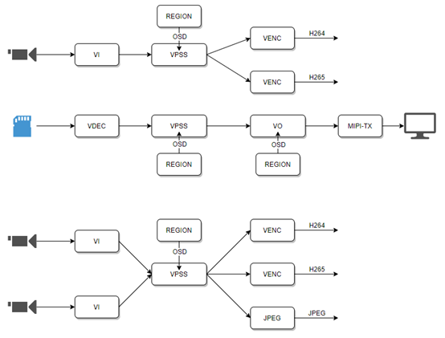

2.2. 设计概述¶
2.2.1. 系统架构¶
图2.1 为MMF的系统架构。由下而上分别为：
硬件层(HW)
由CVITEK SoC加上外围组件组成。外围组件包含Flash、DDR、视频Sensor、音频AD等。
驱动层(Driver)
控制HW的驱动程序。
系统层(OS)
基于Linux/AliOS的操作系统。
输入输出控制(Ioctl)
用以控制SDK涵盖范围以外的组件，例如MIPI_RX，MIPI_TX。
系统开发工具包(SDK)
屏蔽了硬件的细节和差异，提供统一API以供开发。
应用层(Application)
基于SDK和ioctl，由用户开发的应用程序。

图 2.1 MMF系统架构¶
图2.2 为CVITEK媒体处理平台的主要内部处理流程。
其中包含多个组件；
VI捕捉视频图像，可对其做剪切、影像优化等处理后，再将图像数据传递给VPSS处理。
VDEC将编码后的码流译码，再将图像数据传递给VPSS处理。
VPSS接收VI或VDEC发送的图像，并可同时输出多个不同分辨率的图像，以供预览、编码或抓拍。
VO接收VPSS处理后的图像，并根据设定的时序输出到显示设备。
REGION可以将用户所指定的位图（Bitmap）作为OSD迭加到图像数据上。

图 2.2 CVITEK媒体处理平台的主要内部处理流程¶